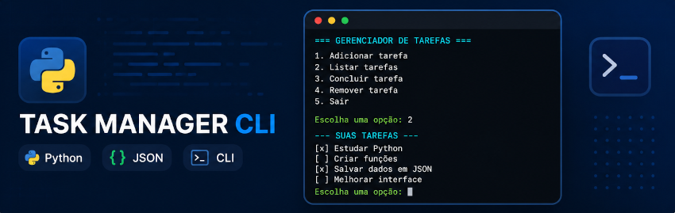

TASK MANAGER CLI

Visão Geral
O Task Manager CLI é uma aplicação de terminal desenvolvida em Python para gerenciamento de tarefas. O sistema permite cadastrar, listar, concluir e remover tarefas através de uma interface em linha de comando.
O projeto foi criado com foco em prática de lógica de programação, organização de código e manipulação de estruturas de dados.
Funcionalidades
- Adicionar tarefas
- Listar tarefas cadastradas
- Marcar tarefas como concluídas
- Remover tarefas
- Persistência de dados em JSON
- Tratamento de erros de entrada
Tecnologias utilizadas
- Python
- JSON
- CLI (Command Line Interface)
Aprendizados
Este projeto foi importante para consolidar conceitos fundamentais de programação em Python, incluindo funções, estruturas condicionais, listas, dicionários e tratamento de exceções.
Também permitiu praticar organização de código e persistência de dados utilizando arquivos JSON.